회사소개
회사소개
HOME > 회사소개 > 회사연혁
회사연혁History
60년의 역사 위에 새로운 미래를 그립니다.
2020's
-
- 2026
- 06 창립 64주년 기념식 개최 “흑자 전환 발판 삼아 재도약 선포”
- 04 피라맥스, 국내발생 말라리아 치료제로 등재-국내 개발 ACT의 치료 현장 적용 확대
- 02 골관절염치료제 하이알플렉스주 발매
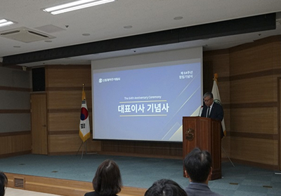
-
- 2025
- 06 신풍제약, 피라맥스 코로나19 특허 획득 (국내,유럽)
- 04 신풍호월학술상 우수 연구 부문 시상 (KSGO 2025)
- 02 신풍제약, 국제뇌졸중학회 오탑리마스타트(SP-8203)2상 임상 통합분석 결과 발표
-
- 2024
- 11 말라리아 치료제 피라맥스, PMI의 말라리아 치료제 최적 공급 업체 선정
- 07 신풍제약, 건강기능식품 사업 확대
- 05 코로나19 치료제 '피라맥스' 임상3상 결과 발표
- 05 유럽 뇌졸중학회서 뇌졸중 혁신신약 후보'오탑리마스타트(SP-8203)' 3상 계획 발표
- 05 제2회 베트남 드럭 스타 어워드 2회 연속 수상
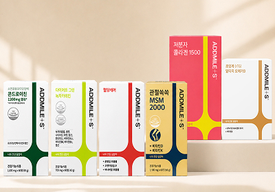
-
- 2023
- 10 골관절염치료제 하이알플렉스주 임상 3상 성공
- 10 코로나19 치료제 피라맥스 임상 3상 톱라인 결과 발표
- 04 신풍호월학술상 우수 연구 부문 시상
- 04 신풍제약, 유착방지제 '메디커튼' 797만불 공급계약 체결
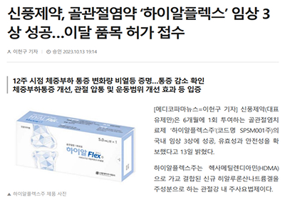
-
- 2022
- 09 코로나19 경구치료제 ‘피라맥스’ 글로벌 3상, 해외 5개국 임상시험계획 승인 완료
- 08 신풍제약, 말라리아 치료제 피라맥스 36억 수출
- 08 신풍제약 애드마일스 2022 대한민국소비자만족도 1위 수상
- 06 창립60주년 기념식
- 02 코로나19 경구치료제 ‘피라맥스’ 글로벌 3상, 영국 임상 시험계획 승인 신청
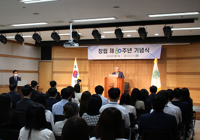
-
- 2021
- 08 피라맥스정, 경구용 코로나19 치료제 임상3상 승인
- 05 월드클래스기업선정, 산업통상자원부 주관 월드클래스 사업 대상기업으로 선정
-
- 2020
- 12 제57회 무역의 날, 3,000만 불 수출의 탑 수상
- 05 피라맥스, 식품의약품안전처로 부터 코로나19 치료제 임상 2상승인
- 02 뇌졸중치료제(SP-8203), 보건의료 R&D 우수성과 선정
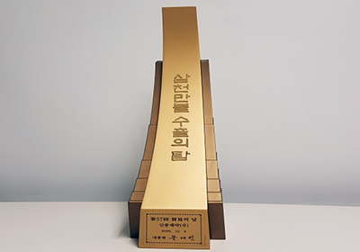
2010's
-
- 2019
- 11 제이투에이치바이오텍(주)와 신약개발 전략적 업무제휴 MOU체결
- 10 의료봉사지원 사업에 라오스대사로부터 감사패 수여
- 08 콜롬비아 Pharmalab S.A와 ‘메디커튼’ MOU 체결
- 07 아프리카 9개국 보건당국자일행 방문
- 04 대한아동병원협회와 해외의료봉사 MOU체결
- 04 급성허혈성 뇌졸중치료제(SP-8203) 식약처 팜나비 사업대상 선정
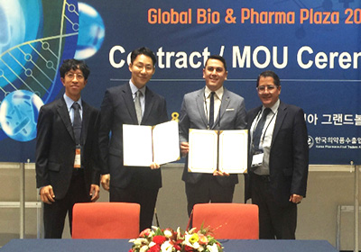
-
- 2018
- 12 식약처, 혁신신약 허혈성뇌졸중치료제(SP-8203) 임상IIb 승인
- 10 코트디부아르 보건복지부장관 일행 피라맥스 공장방문
- 09 항 말라리아치료제 피라맥스 미국FDA 희귀의약품지정
-
- 2017
- 12 씨바이오멕스와 오픈이노베이션 통한 공동연구·투자 MOU체결
-
- 2016
- 05 소아용 피라맥스 과립 한국 식약처 허가승인
- 04 제3자 배정(송암사) 유상증자, 지주회사체제 전환
- 02 신풍제약 창업주 송암 장용택 회장 영면
-
- 2015
- 11 소아용 항말라리아제 피라맥스 과립 유럽의약국(EMA)로 부터 허가승인
- 11 유착방지제 “메디커튼” 대한민국발명특허 대상 수상
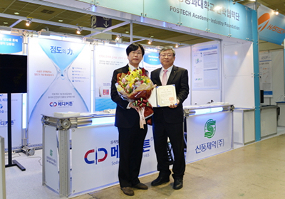
-
- 2013
- 08 산업기술사업화 기술부문 우수상 수상(산업통상자원부)
- 01 EU-GMP 기준 충북오송 생명과학단지 내 세파계 항생제 전용공장 KGMP 승인
-
- 2012
- 02 자궁근종치료제 에스미야®정 유럽위원회(EC) 판매 허가
- 02 제13회 대한민국 신약 개발상 신약개발부분, "피라맥스정” 신약개발대상 수상
- 02 신약 말라리아 치료제 피라맥스정, 국내 최초 EMA 허가 승인
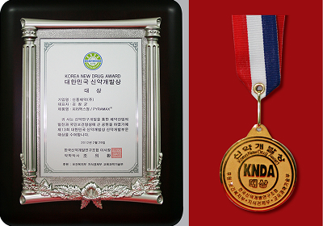
-
- 2011
- 11 복합성분 말라리아 치료제 "피라맥스정" 메디컬코리아 신약개발 대상 수상
- 09 한국화학연구원과 기술이전 및 MOU 체결, 세계 최초 골다공증 치료제 개발 추진
- 08 복합성분 말라리아 치료제 피라맥스정(PYRAMAX®) 신약 허가 (식약청)
- 08 항 말라리아제 피라맥스 정 국산신약 16호 승인(한국 식약청)
- 05 피라맥스 공장 EU-GMP 인증
- 03 "신풍제약제제개발연구소" 개소 한국 산업기술진흥협회로부터 정식 인정
- 01 피라맥스 공장 K-GMP 인증
2000's
-
- 2009
- 06 Mosapride Citrate(숙신산 모사프리드) 원료합성 대량생산 성공
- 06 Irbesartan(이베사탄) 원료합성 대량생산 성공
- 03 Amlodipine Besylate(베실산 암로디핀) 원료합성 대량생산 성공
- 01 충북 오성 생명과학단지 내 세파항생제 전용공장 기공
-
- 2008
- 10 ICTM(국제열대의학회) 감사패 수상
- 08 경기도 안산시 반월공단 내 PYRAMAX(항 말라리아제) 전용공장 준공
-
- 2006
- 10 사업장폐기물 감량화실적 우수사업장선정 환경부장관 표창
- 05 'MMV(Medicines for Malaria Venture)의 2005년 프로젝트 상' 수상
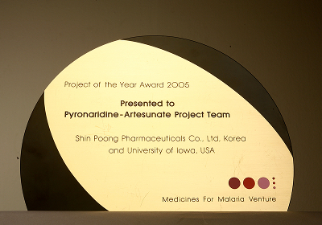
-
- 2005
- 12 Cilnidpine(실리디핀) 원료합성 대량생산 성공
- 11 제42회 무역의 날, 2000만 불 수출의 탑 수상 및 철탑산업훈장 수훈
- 10 Topiramate(토리라메이트) 원료합성 대량생산 성공
- 09 Zaltoprofen(잘토프로펜) 원료합성 대량생산 성공
- 01 캐나다, YM Biosciences사와 항암치료제 Tesmilifene Licensing 계약체결
- 01 북한동포의료지원 사랑의 완진 가방 의약품 전달
-
- 2004
- 07 해외협렵업체대상, SHINPOONG WORLD FRIENDSHIP WORKSHOP
- 05 신풍제약주식회사 신(新)사옥 준공식(강남구 역삼동 748-31)
- 04 Sulbactam Sodium(설박탐 나트륨) 원료합성 대량생산 성공
-
- 2003
- 11 Glimepiride(클리메피리드) 원료합성 대량생산 성공
- 05 신풍제약주식회사 신(新)사옥 기공식
- 01 해외협력업체대상, SHINPOONG WORLD FRIENDSHIP WORKSHOP
-
- 2002
- 11 경기도 안산시 반월공단 내 "KGMP 페니실린제제(제2공장)" 준공식
- 10 The Carter Center(지미카터재단) 감사패 수상
- 10 항 말라리아 신약개발 조인식(WHO, MMV, 신풍제약)
- 09 필리핀 신풍파마 판매법인 설립
- 08 Cefminox Sodium(세프미녹스 나트륨) 원료합성 대량생산 성공
- 06 남성 발기부전증(성기능장애)치료제 스텐드로주 신약개발 성공
- 06 아프리카 수단 GMC공장 증축기공
- 02 제36회 납세자의 날,모범납세자 표창(국세청장)
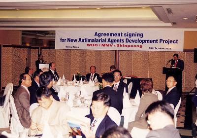
-
- 2001
- 09 한민족복지재단, 한국건강관리협회와 공동으로 북한어린이 돕기 구충제 증정
- 03 Cefmetazole Sodium(세프메타졸 나트륨) 원료합성 대량생산 성공
- 01 미얀마 "신풍대우파마" 설립
-
- 2000
- 12 Fosfomycin Sodium(포스포마이신 나트륨) 원료합성 대량생산 성공
- 06 세계보건기구(WHO), 항말라리아 신약 공동개발 협약
- 05 한민족복지재단, 한국건강관리협회와 공동으로 북한어린이 돕기 구충제 증정
- 03 색전 및 혈전치료제 Ticlopidine HCL(염산 디클로피딘) 원료합성 대량생산 성공
1990's
-
- 1999
- 11 WHO와 유니세프 후원, 국제 헬스케어컨퍼런스 신풍 기생충구제사업 사례 발표
- 03 항생제 Cefazedone Sodium(세파제돈 나트륨) 원료합성 대량생산 성공
- 02 진통소염제 Aceclofenac(아클로페낙) 원료합성 대량생산 성공
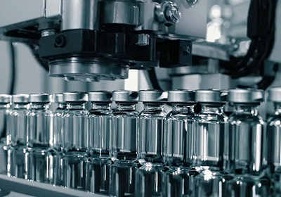
-
- 1998
- 08 항암제 Doxifluridine(독시플루리딘) 세계 2번째, 국내최초 원료합성 대량생산 성공
- 05 진경제 Tiropramide HCI(염산 티로프라미드) 원료합성 대량생산 성공
- 01 Cefotiam HCI(염산 세포티암) 원료합성 대량생산 성공
-
- 1997
- 04 Ceftazidime(세프타지딤) 원료합성 대량생산 성공
- 04 진통소염제 Loxoprofen Sodium, 세계 2번째·국내 최초 원료합성 대량생산 성공
-
- 1996
- 09 항생제 Ceftizoxime Sodium(세프티족심 나트륨) 원료합성 대량생산 성공
- 05 베트남 호치민 시에 “신풍대우파마베트남” 합작공장설립
- 04 Ofloxacin(오플로사신) 원료합성 대량생산 성공
-
- 1995
- 09 항생제 Ceftriaxone Sodium(세프트리악손 나트륨) 원료합성 대량생산 성공
- 01 제약업계 최초로 중국 현지에 “천진신풍제약유한공사”합작법인설립
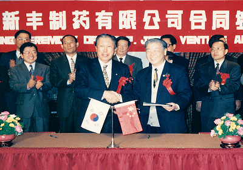
-
- 1994
- 08 경구용 세파항생제 "Cefaclor(세파클러)" 원료합성 대량 생산 성공
- 03 Cefuroxime Sodium(세프록심 나트륨) 원료합성 대량 생산 성공
-
- 1992
- 11 제 29회 무역의 날,'1000만불 수출의 탑' 수상
- 09 Ceftezole Sodium(세프테졸 나트륨) 원료합성 대량생산 성공
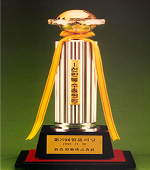
-
- 1990
- 12 Praziquantel(프라지콴텔) 제조방법 특허취득(국내,해외)
- 04 Cefradine(세프라딘) 원료합성 대량생산 성공
- 01 신풍제약 증권거래소 주식상장
1980's
-
- 1988
- 11 완제생산 전 제형 KGMP적격업소 지정
- 11 제25회 무역의날, "5백만 불 수출의 탑" 수상
- 03 아프리카 수단에 합작회사 GMC설립(의약품 현지 생산,판매)
- 03 신풍제약 중앙연구소 설립
- 01 경기도 안산시 반월공단 내 KGMP공장 및 합성공장 증,신축 증공
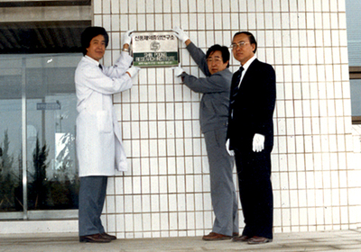
-
- 1987
- 12 의약품 수출증대와 산업발전업체 표창
- 06 중견 수출기업 선정
- 03 보건사회부로부터 KGMP(우수의약품 제조관리시설)적격업소 지정
-
- 1986
- 11 제23회 무역의 날, "1백만 불 수출의 탑" 수상
- 07 "신풍제약주식회사"로 법인체 전환
-
- 1984
- 09 Albendazole(알벤다졸) 원료합성 대량생산 성공
- 04 제12회 보건의 날, 제약업계 최초로 국민훈장 목련장 수훈
- 01 경기도 안산시 반월공단 내 KGMP 공장 준공
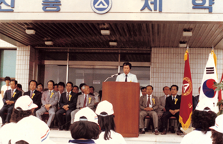
-
- 1983
- 07 간.폐디스토마 치료제 Praziquantel(프라지콴텔)원료합성 성공
- 06 유망 중소기업 선정
-
- 1982
- 07 경기도 안산시 반월공단 내 KGMP 공장 기공식
- 03 제 16회 납세의 날 "모범납세자"표창
1960·70's
-
- 1975
- 09 광범위 구충제 Mebendazole(메벤다졸) 원료합성 성공
-
- 1974
- 12 원료의약품제조업 허가취득
-
-
- 1962
- 06 신풍제약 창립
-